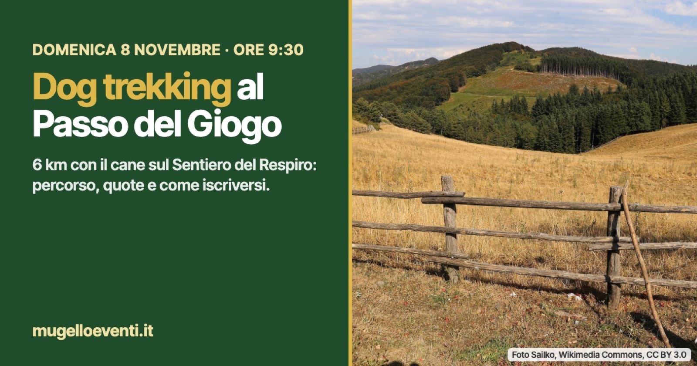

Dog trekking al Passo del Giogo domenica 8 novembre: percorso, quote e iscrizioni
Un anello di 6 km con i cani sul Sentiero del Respiro, tra faggete, crinale CAI 300 e Monte Altuzzo. Ritrovo alle 9:30, iscrizione obbligatoria.

Guinzaglio, scarponcini e una mattina sul crinale. Domenica 8 novembre il Passo del Giogo, a Scarperia e San Piero, è il punto di partenza di un dog trekking guidato: un'escursione pensata per chi cammina insieme al proprio cane.
Il percorso
Si segue il Sentiero del Respiro dei percorsi di Orme del Mugello, tra faggete e panorami appenninici, con un tratto del sentiero spartiacque CAI 300 e altri sentieri CAI. Lungo l'anello si sale anche su Monte Altuzzo, luogo legato alla Seconda guerra mondiale. Sono 6 km circa, con 180 metri di dislivello: difficoltà facile.
Orari e quote
Ritrovo alle 9:30 al Passo del Giogo, arrivo previsto verso le 13, pranzo al sacco. La quota è di 15 euro a persona, 8 euro per i bambini sotto i 12 anni, più 5 euro per ogni cane, e comprende assicurazione RC, organizzazione e assistenza.
Cosa portare
Un litro e mezzo d'acqua, uno snack, scarpe da trekking (obbligatorie), bastoncini se si hanno, abbigliamento a strati. Per il cane acqua e ciotolina; gli snack per loro li offrono gli organizzatori.
Chi organizza e come iscriversi
Organizzano Ombre del Bosco e La Casetta di Grezzano. Guida l'escursione Leonardo Bertelli, guida ambientale escursionistica AIGAE, con Irene, educatrice cinofila ENCI. L'iscrizione si fa con il modulo online indicato nell'evento: https://www.facebook.com/events/1663322568775330/
Per informazioni su WhatsApp: 328 717 3898 (Irene) e 370 149 6888 (Leonardo). Con meteo non adatto o senza il numero minimo di iscritti l'escursione salta, con avviso 24 ore prima.
La scheda nella guida del weekend: https://mugelloeventi.it/weekend/6-8nov2026/dog-trekking-al-passo-del-giogo/
Fonte: Evento Facebook di Ombre del Bosco e La Casetta di Grezzano